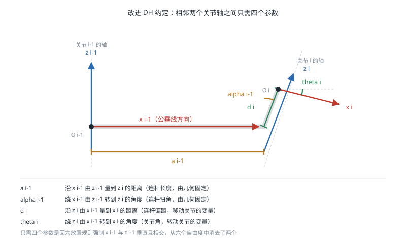

正运动学
引言
正运动学（Forward Kinematics，FK）解决的问题是：已知机器人各关节的位置，求末端执行器（End Effector）在基座坐标系中的位姿。对串联机器人而言，这是一个"沿着连杆链条把变换矩阵连乘起来"的确定性计算，永远有唯一解。正运动学是碰撞检测、雅可比计算、可视化以及逆运动学数值求解的基础，也是把 URDF 文件"跑起来"的第一步。
问题描述
设机器人有 个关节，关节变量组成向量 。对转动关节 是关节角，对移动关节 是伸缩位移。正运动学即求映射：
其中 是末端相对于基座的齐次变换矩阵。
对串联开链机构，只要建立好每个连杆的坐标系，这个映射就是相邻变换的连乘：
问题的关键因此转化为：如何系统地、无歧义地为每个连杆分配坐标系。这正是 DH 参数法要解决的。
Denavit-Hartenberg 参数
基本思想
Denavit-Hartenberg（DH）参数法由 Denavit 和 Hartenberg 于 1955 年提出，其核心洞察是：如果按照特定规则放置连杆坐标系，那么相邻两个坐标系之间的变换只需要 4 个参数即可完全描述，而不是一般刚体变换所需的 6 个。
这 4 个参数是：
| 参数 | 名称 | 含义 |
|---|---|---|
| 连杆长度（Link Length） | 沿 从 到 的距离 | |
| 连杆扭角（Link Twist） | 绕 从 到 的转角 | |
| 连杆偏距（Link Offset） | 沿 从 到 的距离 | |
| 关节角（Joint Angle） | 绕 从 到 的转角 |
其中 与 由连杆的几何形状决定（固定值）， 与 中有一个是关节变量：转动关节的变量是 ，移动关节的变量是 。

之所以只需 4 个参数，是因为坐标系放置规则强制要求 与 垂直且相交，这两个约束消去了 6 个自由度中的 2 个。
标准 DH 与改进 DH
存在两种广泛使用的 DH 约定，二者的差别在于连杆坐标系原点的放置位置：
- 标准 DH（Standard DH，SDH）：坐标系 固连在连杆 的远端（靠近关节 ），变换顺序为
- 改进 DH（Modified DH，MDH）：坐标系 固连在连杆 的近端（在关节 的轴线上），变换顺序为
Craig 的教材与多数工业机器人厂商采用改进 DH，其变换矩阵为：
标准 DH 的变换矩阵为：
两种约定的参数表不能混用。拿到一份 DH 参数表时，如果不确定是哪种约定，可以通过一个已知构型（如全零位）的末端位姿进行验证。参数表中下标的写法（ 还是 ）是最直接的判别线索。
坐标系建立步骤（改进 DH）
- 找出所有关节轴，为轴 指定方向，作为
- 找出 与 的公垂线，其与 的交点即为原点 ；若两轴相交，取交点为原点；若两轴平行，公垂线不唯一，可自由选择以使 尽量为零
- 沿公垂线由 指向 的方向定义
- 按右手法则确定
- 基座坐标系 通常取与 在零位时重合，使
- 末端坐标系 的原点取在末端执行器的工作点（Tool Center Point，TCP）上
示例：Puma 560 的 DH 参数
Puma 560 是最经典的六轴工业机械臂教学模型，其改进 DH 参数为：
| (°) | (m) | (m) | ||
|---|---|---|---|---|
| 1 | 0 | 0 | 0 | |
| 2 | -90 | 0 | 0 | |
| 3 | 0 | 0.4318 | 0.1491 | |
| 4 | -90 | 0.0203 | 0.4331 | |
| 5 | 90 | 0 | 0 | |
| 6 | -90 | 0 | 0 |
后三个关节的轴线交于一点（球形手腕，Spherical Wrist），这一结构特征使其逆运动学可以解耦为位置与姿态两个子问题，详见 逆运动学。
DH 参数法的局限
- 不唯一：同一机器人可以有多组合法的 DH 参数，取决于坐标系原点与轴方向的选择
- 在平行轴附近病态：当相邻两轴接近平行时，公垂线的位置对几何误差极其敏感，微小的装配偏差会导致 参数剧烈变化。这使得 DH 参数不适合作为标定（Calibration）的参数化方式，标定通常改用 Hayati 参数或 POE 模型
- 不支持树状与闭链结构：DH 只适用于串联开链；人形机器人、四足机器人这类树状结构需要更一般的描述方式（如 URDF）
指数积公式
旋量与关节螺旋轴
指数积（Product of Exponentials，POE）公式是 Brockett 提出的另一种正运动学表述，也是 Lynch 与 Park 教材的主线。它不需要为每个连杆定义坐标系，只需要：
- 一个基座坐标系与一个末端坐标系
- 机器人处于零位（Home Configuration）时的末端位姿
- 每个关节在零位时的螺旋轴（Screw Axis）
螺旋轴写作 ，其中 是单位旋转轴方向，（ 是轴上任意一点）。对移动关节，， 为单位移动方向。
公式形式
以基座坐标系（空间坐标系）表示的螺旋轴给出空间形式：
以末端坐标系（物体坐标系）表示则给出物体形式：
其中矩阵指数为：
即 Rodrigues 公式。
POE 与 DH 的比较
| 方面 | DH 参数 | 指数积公式 |
|---|---|---|
| 中间坐标系 | 每个连杆一个，需精心放置 | 不需要 |
| 参数个数 | （有冗余但无约束） | |
| 参数唯一性 | 不唯一 | 螺旋轴由几何直接确定 |
| 平行轴处的数值条件 | 病态 | 良好 |
| 适用于标定 | 需改用 Hayati 等修正 | 直接适用，参数随几何连续变化 |
| 教材普及度 | Craig、Siciliano | Lynch & Park、Murray |
| 与李群工具的衔接 | 间接 | 天然一致 |
工程上的实用建议：读厂商文档和老代码时需要懂 DH，写新代码时 POE 更省心，而实际项目中最常见的做法是既不手写 DH 也不手写 POE，而是直接使用 URDF 加现成的运动学库。
URDF 中的运动学描述
结构
ROS 使用 URDF（Unified Robot Description Format）以 XML 描述机器人。URDF 用 link（连杆）与 joint（关节）构成一棵树，每个 joint 的 origin 给出父连杆到子连杆坐标系的固定变换，axis 给出关节的运动轴：
<robot name="two_link_arm">
<link name="base_link"/>
<link name="link1">
<visual>
<origin xyz="0 0 0.15" rpy="0 0 0"/>
<geometry><cylinder radius="0.03" length="0.3"/></geometry>
</visual>
<inertial>
<origin xyz="0 0 0.15"/>
<mass value="1.2"/>
<inertia ixx="0.01" iyy="0.01" izz="0.002" ixy="0" ixz="0" iyz="0"/>
</inertial>
</link>
<joint name="joint1" type="revolute">
<parent link="base_link"/>
<child link="link1"/>
<origin xyz="0 0 0.1" rpy="0 0 0"/>
<axis xyz="0 0 1"/>
<limit lower="-3.14" upper="3.14" effort="150" velocity="2.0"/>
</joint>
<link name="link2"/>
<joint name="joint2" type="revolute">
<parent link="link1"/>
<child link="link2"/>
<origin xyz="0 0 0.3" rpy="1.5708 0 0"/>
<axis xyz="0 0 1"/>
<limit lower="-2.5" upper="2.5" effort="100" velocity="2.0"/>
</joint>
</robot>
URDF 的 origin 是一般的 6 参数刚体变换，不受 DH 的 4 参数约束，因此坐标系可以放在任何方便的位置——这也意味着 URDF 与 DH 参数之间没有一一对应关系，从 URDF 反推 DH 参数需要额外的计算。
关节类型
| type | 自由度 | 说明 |
|---|---|---|
revolute |
1 | 转动关节，有上下限 |
continuous |
1 | 转动关节，无限位（如轮子） |
prismatic |
1 | 移动关节，有行程限制 |
fixed |
0 | 刚性连接，常用于挂载传感器 |
floating |
6 | 浮动基座，URDF 不支持仿真，需用 SDF |
planar |
3 | 平面运动 |
URDF 无法描述闭链（如 Delta 并联机构、四连杆膝关节），这类结构需要使用 SDF 或在 URDF 基础上通过 <gazebo> 标签添加额外约束。
常用工具命令
# 从 xacro 生成 URDF 并检查语法
xacro robot.urdf.xacro > robot.urdf && check_urdf robot.urdf
# 导出运动学树的图形化视图
urdf_to_graphiz robot.urdf
# 启动关节滑块与 RViz 交互查看正运动学
ros2 launch urdf_launch display.launch.py urdf_package:=my_robot \
urdf_package_path:=urdf/robot.urdf
代码实现
手工实现改进 DH 正运动学
import numpy as np
def mdh_transform(alpha, a, d, theta):
"""改进 DH 约定的单步齐次变换 {i-1} -> {i}"""
ca, sa = np.cos(alpha), np.sin(alpha)
ct, st = np.cos(theta), np.sin(theta)
return np.array([
[ct, -st, 0, a],
[st * ca, ct * ca, -sa, -d * sa],
[st * sa, ct * sa, ca, d * ca],
[0, 0, 0, 1.0],
])
# Puma 560 改进 DH 参数：(alpha_{i-1}, a_{i-1}, d_i)
PUMA560_MDH = [
(0.0, 0.0, 0.0),
(-np.pi / 2, 0.0, 0.0),
(0.0, 0.4318, 0.1491),
(-np.pi / 2, 0.0203, 0.4331),
(np.pi / 2, 0.0, 0.0),
(-np.pi / 2, 0.0, 0.0),
]
def forward_kinematics(q, params=PUMA560_MDH):
"""返回末端位姿以及每个连杆坐标系的位姿"""
T = np.eye(4)
frames = [T.copy()]
for (alpha, a, d), theta in zip(params, q):
T = T @ mdh_transform(alpha, a, d, theta)
frames.append(T.copy())
return T, frames
if __name__ == '__main__':
q_zero = np.zeros(6)
T_end, _ = forward_kinematics(q_zero)
print('零位末端位置 (m):', np.round(T_end[:3, 3], 4))
q = np.array([0.1, -0.5, 0.8, 0.2, 0.4, -0.3])
T_end, frames = forward_kinematics(q)
print('给定构型末端位置 (m):', np.round(T_end[:3, 3], 4))
print('连杆坐标系数量:', len(frames))
使用 Robotics Toolbox 验证
import roboticstoolbox as rtb
import numpy as np
robot = rtb.models.DH.Puma560()
q = np.array([0.1, -0.5, 0.8, 0.2, 0.4, -0.3])
T = robot.fkine(q) # 返回 SE3 对象
print(T)
print('末端位置:', T.t)
print('末端 RPY:', T.rpy())
# 打印机器人结构与 DH 参数表
print(robot)
使用 Pinocchio 从 URDF 计算
Pinocchio 直接读取 URDF，适合真实机器人项目，且同一模型可继续用于 动力学 计算：
import pinocchio as pin
import numpy as np
model = pin.buildModelFromUrdf('robot.urdf')
data = model.createData()
q = pin.neutral(model) # 零位构型
pin.forwardKinematics(model, data, q)
pin.updateFramePlacements(model, data)
frame_id = model.getFrameId('tool0')
T = data.oMf[frame_id] # SE3 对象
print('末端位置:', T.translation)
print('末端旋转:\n', T.rotation)
工作空间
正运动学映射的值域即机器人的工作空间（Workspace），分为两类：
- 可达工作空间（Reachable Workspace）：末端参考点能够到达的所有位置的集合
- 灵巧工作空间（Dexterous Workspace）：末端能以任意姿态到达的位置集合，是可达工作空间的子集，通常小得多
工作空间的边界由关节限位与连杆长度共同决定。对于平面两连杆机械臂（连杆长 ，无关节限位），可达工作空间是内径 、外径 的圆环。当 时内径为零，工作空间为完整圆盘，但原点处于奇异位形。
工程上常用蒙特卡洛采样估计工作空间：在关节限位内随机采样大量构型，对每个构型计算正运动学，得到末端位置点云后计算其凸包或体素占用率。这个方法简单可靠，也便于比较不同连杆长度设计方案的优劣。
参考资料
- Craig, J. J. (2005). Introduction to Robotics: Mechanics and Control (3rd ed.). Pearson Prentice Hall. — 第 3 章详述改进 DH 约定与正运动学。
- Denavit, J. & Hartenberg, R. S. (1955). A Kinematic Notation for Lower-Pair Mechanisms Based on Matrices. Journal of Applied Mechanics, 22, 215-221.
- Lynch, K. M. & Park, F. C. (2017). Modern Robotics. Cambridge University Press. — 第 4 章讲解指数积公式。
- Brockett, R. W. (1984). Robotic Manipulators and the Product of Exponentials Formula. Mathematical Theory of Networks and Systems, 120-129.
- Hayati, S. & Mirmirani, M. (1985). Improving the Absolute Positioning Accuracy of Robot Manipulators. Journal of Robotic Systems, 2(4), 397-413. — 讨论 DH 参数在平行轴处的病态问题。
- URDF — ROS Wiki
- Corke, P. (2017). Robotics, Vision and Control (2nd ed.). Springer.